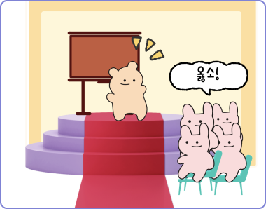

My-U
로그아웃
당신과 찰떡궁합 동아리는...?
시사.이슈 동아리


공유하기
#따듯한_마음_냉철한_분석! #추진력 갑!
# 논리력 # 분석적
-평소 다양한 사회 문제에 관심이 많으시군요!
-글을 읽고 분석하는 것을 좋아하며 문제가 생겼을 때 이를 해결하고자하는 추진력이 대단하네요
-타인에게 관심이 많아 친절한 사람들이 많아요
-평소 다양한 사회 문제에 관심이 많으시군요!
-글을 읽고 분석하는 것을 좋아하며 문제가 생겼을 때 이를 해결하고자하는 추진력이 대단하네요
-타인에게 관심이 많아 친절한 사람들이 많아요